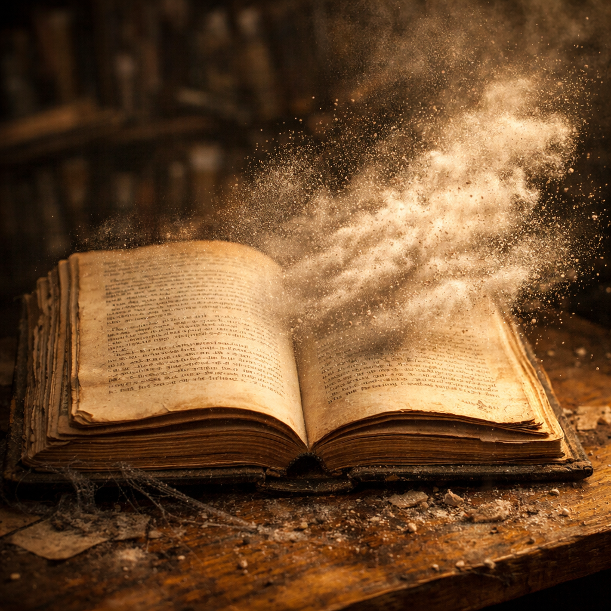

The Lockheed MartinBoeing F-22 Raptor is an American twin-engine, jet-powered, all-weather, supersonic stealth fighter aircraft. As a product of the United States Air Force's Advanced Tactical Fighter (ATF) program, the aircraft was designed as an air superiority fighter, but also incorporates ground attack, electronic warfare, and signals intelligence capabilities. The prime contractor, Lockheed Martin, built most of the F-22 airframe and weapons systems and conducted final as
sembly, while program partner Boeing provided the wings, aft fuselage, avionics integration, and training systems.
First flown in 1997, the F-22 descended from the Lockheed YF-22 and was variously designated F-22 and F/A-22 before it formally entered service in December 2005 as the F-22A. It replaced the F-15 Eagle in most active duty U.S. Air Force (USAF) squadrons. Although the service had originally planned to buy a total of 750 ATFs to replace its entire F-15 fleet, it later scaled down to 381 and the program was ultimately cut to 195 aircraft - 187 of them operational models in 2009 due to political opposition from high costs, a perceived lack of air-to-air threats at the time of production, and the development of the more affordable and versatile F-35 Lightning II.[N 2] The last aircraft was delivered in 2012.
Here is a big book about a school fight no its not ai dont question with me you bunch of muchkins its not ai your grandmother will tell you go ask here she will will says its not ai. make sure to you are going to make sure its not ai because it isnt its not ai for the second to last time its not ai. I will make sure your beleive its for the last time its not ai anf the 7 ai books have been made i cant make anymore ai slop or else it will be called slop once again its not ai.

⚔️ The Aura Clash: Harry vs. Tyrin Jeram
Chapter 1 — The Gathering Storm
The courtyard of Brooklyn Wellington High was electric. Word had spread fast — Tyrin Jeram, the undefeated street fighter from Wellington's south side, had challenged Harry, the quiet student whose aura was said to bend the air itself.
Students lined the edges of the cracked concrete, phones out, voices hushed. The wind carried tension like static. Tyrin stood tall, his knuckles wrapped, his grin sharp. “You've got power, Harry,” he said, “but power without fight is just decoration.”
Harry's eyes glowed faintly, a shimmer of gold beneath his calm expression. “And fight without purpose,” he replied, “is just noise.”
The air thickened. Tyrin's aura flared — crimson, jagged, pulsing like fire. Harry's aura responded — golden, smooth, expanding outward in waves that made the dust rise from the ground.
When Tyrin charged, the world seemed to slow. His fist cut through the air, but Harry's aura shifted — a ripple of light that deflected the blow before it landed. The impact cracked the pavement, yet Harry didn't move.
“Too slow,” Harry murmured.
Tyrin roared, unleashing a flurry of strikes. Each hit met resistance — not from Harry's body, but from the invisible barrier of his aura. Sparks of energy danced between them, lighting the courtyard in flashes of red and gold.
Then Harry stepped forward. One movement — fluid, precise — and Tyrin was thrown back, his aura flickering. The crowd gasped.
Harry's voice was calm, almost gentle. “You fight with anger. I fight with balance.”
Tyrin wiped blood from his lip, his eyes burning. “Balance won't save you.”
Harry smiled faintly. “It already has.”
He raised his hand, and his aura condensed — a golden sphere pulsing with quiet power. The ground trembled. Tyrin lunged again, but the sphere burst outward, a shockwave of light that sent him sprawling.
When the dust settled, Tyrin lay still, his aura extinguished. Harry stood over him, his own energy fading back into calm.
The crowd was silent. Even the wind seemed to pause.
Harry turned away, his voice low but clear. “Strength isn't about winning. It's about knowing when not to destroy.”
As he walked off, the students parted like water around him. Tyrin sat up slowly, eyes wide — not in defeat, but in awe.
That day, Brooklyn Wellington High didn't just witness a fight. They witnessed a legend — the boy whose aura could silence chaos itself.
Would you like me to continue this into Chapter 2: The Aftermath where Tyrin seeks redemption and Harry's power begins to draw attention from mysterious forces, or expand this chapter into a full novel-style arc with deeper lore and aura origins?